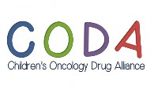
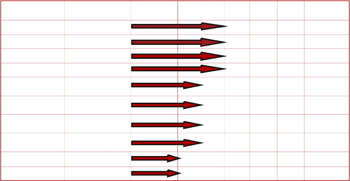

Novogen Ltd is a public Australian drug development company whose shares trade on both the Australian Securities Ex- change (’NRT’) and NASDAQ (“NVGN”). The Novogen group includes a New Haven CT-based joint venture company, CanTx Inc., with Yale University
Novogen differentiates itself in the marketspace from all other stem cell and cancer therapy biotech companies by developing a product that will target the stem cell and the somatic cell in the one drug.
Novogen has two main drug technology platforms: Super- benzopyrans (SBPs) and anti-tropomyosins (ATMs). SBP compounds have been created to kill the full range of cells within a tumor. The ATM compounds target the microfila- ment component of the cancer cell and when used in con- junction with standard anti-microtubular drugs, result in comprehensive and fatal destruction of the cancer cell’s cytoskeleton.
ONCOLOGY PROGRAM
Cantrixil
First in man studies expected to commence Q3 2015 in late stage ovarian cancer patients and malignant ascites patients
Final test in an animal model developed in conjunction with CanTx Inc. successful in eradicating tumor devel- opment in the great majority of mice
Cantrixil is being developed as a first-line, second-line and salvage therapy for ovarian cancer and the treat- ment of late stage conditions, malignant ascites and malignant pleural effusion
Trx-7
Currently in the development stage for prostate cancer
Trilexium
ATM
Other Programs
Novogen Ltd 16-18 Edgeworth David Ave, Hornsby, NSW 2077, Australia +61 2 9472 4100
Partnerships
Novogen has a global presence with offices in Australia and the US. Novogen partners with many universities, hospitals and research centers around the globe giving it the ability to bring clinical trials globally and ensure the best option is considered.

Genea Biocells
Novogen in partnership with Genea will test molecules in laboratory models across a range of degenerative diseases including fascioscapu- larhumeral dystrophy, Alzheimer’s, Sanfillipo syndrome and infantile neuraxonal dystrophy. The collaboration is on the basis of pooling resources and each company retaining its own IP and commercial opportunities
Yale University
On the 7th November, 2013, Novogen formed a joint venture CanTx Inc. with Yale University.
The joint venture is based in New Haven Con- necticut and is owned 85% by Novogen. CanTx R&D will be centred at the laboratories of Prof. Gil Mor, Yale Medical School.
CODA
Children’s Oncology Kids Alliance
In May, 2014, Novogen became the founding investor in a new partnership called CODA, formed to facilitate the development of treat- ments for childhood cancers.
“Super-benzopyrans are the first drug class we have seen with the ability to selectively modulate misbe- having stem cells”
- Dr Uli Schmidt, General Manager of Genea Biocells
“An obvious strategy is to be more suc- cessful in treating primary disease, so that we stop the development of recurrent disease. We need to be able to kill the ovarian cancer stem cells before they have the chance to produce a second generation of highly chemo resistance daughter cells”. - Professor Gil Mor, Yale
The Holy Grail of childhood cancer therapy is a medicine that is effective against a tumor such as neuroblas- toma, but doesn’t leave the sort of damage that the child then has to deal with for the rest of his or her life.—Dr Graham Kelly Novogen CEO

Therapeutic Field Program Discovery Preclinical Phase 1 Phase 2 Phase 3 Expected Trial
commencement
Oncology Cantrixil Q3 2015
Oncology Trx-7 Q3 2015
Oncology Trilexium Q4 2015
Oncology ATM Q4 2015
Degenerative pro- gram
Degenerative pro- gram
Degenerative pro- gram
Degenerative pro- gram
Stem Cell regeneration
Neurodegenerative Diseases
Muscular Dystrophy
Lysosomal Storage Disorder
Autoimmune Disease Autoimmune Disease Regenerative Disease Regenerative Diseases